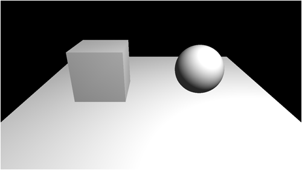
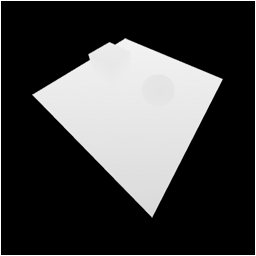
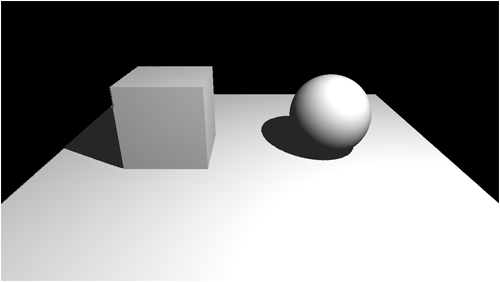
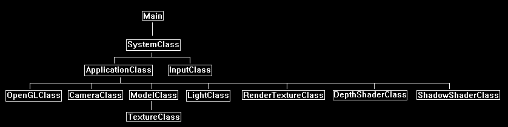
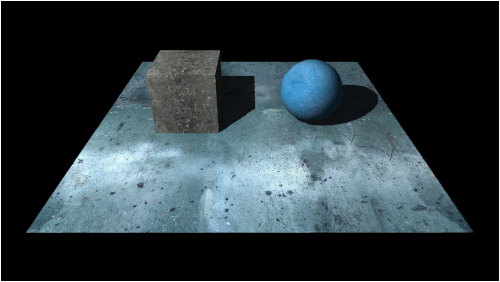

This tutorial will cover how to implement shadow mapping in OpenGL 4.0 using C++ and GLSL.
Before proceeding with this tutorial, you should first have a clear understanding of the following concepts: Render to Texture (Tutorial 25), Depth Buffers (Tutorial 35), and Projective Texturing (Tutorial 39).
Shadow mapping is one of the fastest and CPU/GPU efficient methods for rendering shadows in small to medium sized scenes.
It is also one of the simpler methods that gives highly realistic results.
To understand how shadow mapping works we will start with a basic scene that is illuminated with a single point light:

The light that is illuminating the scene is originating from behind and to the right of our current camera position.
The light position is very important as the next step is that we will render the scene from the point of view of the light.
When we render from the light's point of view we will render just the depth buffer information into a render to texture.
This render to texture filled with depth information is called the Shadow Map and looks like the following:

Now that we have the depth information of all the objects in the scene that could possibly cast a shadow we can now figure out where the shadows should occur.
When we render the scene, we will project the shadow map texture back onto the scene to get the depth of any objects that cast shadows and compare it with the position of the light on a per pixel basis in the pixel shader.
If we find the light is closer to the camera then we light the pixel.
If we find the object is closer to the camera then we shadow the pixel.
Doing so produces the following image:

Framework
The framework is similar to the last tutorial, except that we will now need RenderTextureClass and DepthShaderClass from the previous tutorials.
And we will also need a new class named ShadowShaderClass.

We will start the code section of the shadow map tutorial by examining the GLSL shaders first.
The shadow shader is based mostly on the projection shader from the previous tutorial.
Shadow.vs
////////////////////////////////////////////////////////////////////////////////
// Filename: shadow.vs
////////////////////////////////////////////////////////////////////////////////
#version 400
/////////////////////
// INPUT VARIABLES //
/////////////////////
in vec3 inputPosition;
in vec2 inputTexCoord;
in vec3 inputNormal;
//////////////////////
// OUTPUT VARIABLES //
//////////////////////
out vec2 texCoord;
out vec3 normal;
We have an output vec4 called lightViewPosition that is used for sending the light perspective transformed vertex into the pixel shader.
out vec4 lightViewPosition;
out vec3 lightPos;
///////////////////////
// UNIFORM VARIABLES //
///////////////////////
uniform mat4 worldMatrix;
uniform mat4 viewMatrix;
uniform mat4 projectionMatrix;
The vertex shader will require two light matrices to transform the vertex based on the light's view point.
uniform mat4 lightViewMatrix;
uniform mat4 lightProjectionMatrix;
uniform vec3 lightPosition;
////////////////////////////////////////////////////////////////////////////////
// Vertex Shader
////////////////////////////////////////////////////////////////////////////////
void main(void)
{
vec4 worldPosition;
// Calculate the position of the vertex against the world, view, and projection matrices.
gl_Position = vec4(inputPosition, 1.0f) * worldMatrix;
gl_Position = gl_Position * viewMatrix;
gl_Position = gl_Position * projectionMatrix;
Here we transform the vertex based on the light's perspective.
// Store the position of the vertice as viewed by the projection view point in a separate variable.
lightViewPosition = vec4(inputPosition, 1.0f) * worldMatrix;
lightViewPosition = lightViewPosition * lightViewMatrix;
lightViewPosition = lightViewPosition * lightProjectionMatrix;
// Store the texture coordinates for the pixel shader.
texCoord = inputTexCoord;
// Calculate the normal vector against the world matrix only.
normal = inputNormal * mat3(worldMatrix);
// Normalize the normal vector.
normal = normalize(normal);
// Calculate the position of the vertex in the world.
worldPosition = vec4(inputPosition, 1.0f) * worldMatrix;
// Determine the light position based on the position of the light and the position of the vertex in the world.
lightPos = lightPosition.xyz - worldPosition.xyz;
// Normalize the light position vector.
lightPos = normalize(lightPos);
}
Shadow.ps
////////////////////////////////////////////////////////////////////////////////
// Filename: shadow.ps
////////////////////////////////////////////////////////////////////////////////
#version 400
/////////////////////
// INPUT VARIABLES //
/////////////////////
in vec2 texCoord;
in vec3 normal;
in vec4 lightViewPosition;
in vec3 lightPos;
//////////////////////
// OUTPUT VARIABLES //
//////////////////////
out vec4 outputColor;
///////////////////////
// UNIFORM VARIABLES //
///////////////////////
uniform sampler2D shaderTexture;
The depthMapTexture is the shadow map.
This texture contains the scene depth buffer rendered from the light's perspective.
uniform sampler2D depthMapTexture;
uniform vec4 ambientColor;
uniform vec4 diffuseColor;
uniform float bias;
////////////////////////////////////////////////////////////////////////////////
// Pixel Shader
////////////////////////////////////////////////////////////////////////////////
void main(void)
{
vec4 color;
vec2 projectTexCoord;
float depthValue;
float lightDepthValue;
float lightIntensity;
vec4 textureColor;
// Set the default output color to the ambient light value for all pixels.
color = ambientColor;
Calculate the projected texture coordinates for sampling the shadow map (depth buffer texture) based on the light's viewing position.
// Calculate the projected texture coordinates.
projectTexCoord.x = lightViewPosition.x / lightViewPosition.w / 2.0f + 0.5f;
projectTexCoord.y = lightViewPosition.y / lightViewPosition.w / 2.0f + 0.5f;
Check if the projected coordinates are in the view of the light, if not then the pixel gets just an ambient value.
// Determine if the projected coordinates are in the 0 to 1 range. If so then this pixel is in the view of the light.
if((clamp(projectTexCoord.x, 0.0, 1.0) == projectTexCoord.x) && (clamp(projectTexCoord.y, 0.0, 1.0) == projectTexCoord.y))
{
Now that we are in the view of the light, we will retrieve the depth value from the shadow map (depthMapTexture).
We only sample the red component since this is a grey scale texture.
The depth value we get from the texture translates into the distance to the nearest object.
This is important since objects are what cast the shadows and hence why it is called a shadow map.
// Sample the shadow map depth value from the depth texture using the sampler at the projected texture coordinate location.
depthValue = texture(depthMapTexture, projectTexCoord).r;
Now that we have the depth of the object for this pixel, we need the depth of the light to determine if it is in front or behind the object.
We get this from the lightViewPosition.
Note that we need to subtract the bias from this or we will get the floating-point precision issue.
// Calculate the depth of the light.
lightDepthValue = lightViewPosition.z / lightViewPosition.w;
// Subtract the bias from the lightDepthValue.
lightDepthValue = lightDepthValue - bias;
Now we perform the comparison between the light depth and the object depth.
If the light is closer to us then no shadow.
But if the light is behind an object in the shadow map, then it gets shadowed.
Note that a shadow just means we only use the default ambient light, we don't color it black or anything.
// Compare the depth of the shadow map value and the depth of the light to determine whether to shadow or to light this pixel.
// If the light is in front of the object then light the pixel, if not then shadow this pixel since an object (occluder) is casting a shadow on it.
if(lightDepthValue < depthValue)
{
If the light was in front of the object, then there is no shadow and we do regular lighting.
// Calculate the amount of light on this pixel.
lightIntensity = clamp(dot(normal, lightPos), 0.0f, 1.0f);
if(lightIntensity > 0.0f)
{
// Determine the final diffuse color based on the diffuse color and the amount of light intensity.
color += (diffuseColor * lightIntensity);
// Saturate the final light color.
color = clamp(color, 0.0f, 1.0f);
}
}
}
// Sample the pixel color from the texture using the sampler at this texture coordinate location.
textureColor = texture(shaderTexture, texCoord);
// Combine the light and texture color.
outputColor = color * textureColor;
}
Shadowshaderclass.h
The ShadowShaderClass is just the ProjectionShaderClass modified for shadows.
////////////////////////////////////////////////////////////////////////////////
// Filename: shadowshaderclass.h
////////////////////////////////////////////////////////////////////////////////
#ifndef _SHADOWSHADERCLASS_H_
#define _SHADOWSHADERCLASS_H_
//////////////
// INCLUDES //
//////////////
#include <iostream>
using namespace std;
///////////////////////
// MY CLASS INCLUDES //
///////////////////////
#include "openglclass.h"
////////////////////////////////////////////////////////////////////////////////
// Class name: ShadowShaderClass
////////////////////////////////////////////////////////////////////////////////
class ShadowShaderClass
{
public:
ShadowShaderClass();
ShadowShaderClass(const ShadowShaderClass&);
~ShadowShaderClass();
bool Initialize(OpenGLClass*);
void Shutdown();
bool SetShaderParameters(float*, float*, float*, float*, float*, float*, float*, float*, float);
private:
bool InitializeShader(char*, char*);
void ShutdownShader();
char* LoadShaderSourceFile(char*);
void OutputShaderErrorMessage(unsigned int, char*);
void OutputLinkerErrorMessage(unsigned int);
private:
OpenGLClass* m_OpenGLPtr;
unsigned int m_vertexShader;
unsigned int m_fragmentShader;
unsigned int m_shaderProgram;
};
#endif
Shadowshaderclass.cpp
////////////////////////////////////////////////////////////////////////////////
// Filename: shadowshaderclass.cpp
////////////////////////////////////////////////////////////////////////////////
#include "shadowshaderclass.h"
ShadowShaderClass::ShadowShaderClass()
{
m_OpenGLPtr = 0;
}
ShadowShaderClass::ShadowShaderClass(const ShadowShaderClass& other)
{
}
ShadowShaderClass::~ShadowShaderClass()
{
}
bool ShadowShaderClass::Initialize(OpenGLClass* OpenGL)
{
char vsFilename[128];
char psFilename[128];
bool result;
// Store the pointer to the OpenGL object.
m_OpenGLPtr = OpenGL;
We load the shadow.vs and shadow.ps GLSL shader files here.
// Set the location and names of the shader files.
strcpy(vsFilename, "../Engine/shadow.vs");
strcpy(psFilename, "../Engine/shadow.ps");
// Initialize the vertex and pixel shaders.
result = InitializeShader(vsFilename, psFilename);
if(!result)
{
return false;
}
return true;
}
void ShadowShaderClass::Shutdown()
{
// Shutdown the shader.
ShutdownShader();
// Release the pointer to the OpenGL object.
m_OpenGLPtr = 0;
return;
}
bool ShadowShaderClass::InitializeShader(char* vsFilename, char* fsFilename)
{
const char* vertexShaderBuffer;
const char* fragmentShaderBuffer;
int status;
// Load the vertex shader source file into a text buffer.
vertexShaderBuffer = LoadShaderSourceFile(vsFilename);
if(!vertexShaderBuffer)
{
return false;
}
// Load the fragment shader source file into a text buffer.
fragmentShaderBuffer = LoadShaderSourceFile(fsFilename);
if(!fragmentShaderBuffer)
{
return false;
}
// Create a vertex and fragment shader object.
m_vertexShader = m_OpenGLPtr->glCreateShader(GL_VERTEX_SHADER);
m_fragmentShader = m_OpenGLPtr->glCreateShader(GL_FRAGMENT_SHADER);
// Copy the shader source code strings into the vertex and fragment shader objects.
m_OpenGLPtr->glShaderSource(m_vertexShader, 1, &vertexShaderBuffer, NULL);
m_OpenGLPtr->glShaderSource(m_fragmentShader, 1, &fragmentShaderBuffer, NULL);
// Release the vertex and fragment shader buffers.
delete [] vertexShaderBuffer;
vertexShaderBuffer = 0;
delete [] fragmentShaderBuffer;
fragmentShaderBuffer = 0;
// Compile the shaders.
m_OpenGLPtr->glCompileShader(m_vertexShader);
m_OpenGLPtr->glCompileShader(m_fragmentShader);
// Check to see if the vertex shader compiled successfully.
m_OpenGLPtr->glGetShaderiv(m_vertexShader, GL_COMPILE_STATUS, &status);
if(status != 1)
{
// If it did not compile then write the syntax error message out to a text file for review.
OutputShaderErrorMessage(m_vertexShader, vsFilename);
return false;
}
// Check to see if the fragment shader compiled successfully.
m_OpenGLPtr->glGetShaderiv(m_fragmentShader, GL_COMPILE_STATUS, &status);
if(status != 1)
{
// If it did not compile then write the syntax error message out to a text file for review.
OutputShaderErrorMessage(m_fragmentShader, fsFilename);
return false;
}
// Create a shader program object.
m_shaderProgram = m_OpenGLPtr->glCreateProgram();
// Attach the vertex and fragment shader to the program object.
m_OpenGLPtr->glAttachShader(m_shaderProgram, m_vertexShader);
m_OpenGLPtr->glAttachShader(m_shaderProgram, m_fragmentShader);
// Bind the shader input variables.
m_OpenGLPtr->glBindAttribLocation(m_shaderProgram, 0, "inputPosition");
m_OpenGLPtr->glBindAttribLocation(m_shaderProgram, 1, "inputTexCoord");
m_OpenGLPtr->glBindAttribLocation(m_shaderProgram, 2, "inputNormal");
// Link the shader program.
m_OpenGLPtr->glLinkProgram(m_shaderProgram);
// Check the status of the link.
m_OpenGLPtr->glGetProgramiv(m_shaderProgram, GL_LINK_STATUS, &status);
if(status != 1)
{
// If it did not link then write the syntax error message out to a text file for review.
OutputLinkerErrorMessage(m_shaderProgram);
return false;
}
return true;
}
void ShadowShaderClass::ShutdownShader()
{
// Detach the vertex and fragment shaders from the program.
m_OpenGLPtr->glDetachShader(m_shaderProgram, m_vertexShader);
m_OpenGLPtr->glDetachShader(m_shaderProgram, m_fragmentShader);
// Delete the vertex and fragment shaders.
m_OpenGLPtr->glDeleteShader(m_vertexShader);
m_OpenGLPtr->glDeleteShader(m_fragmentShader);
// Delete the shader program.
m_OpenGLPtr->glDeleteProgram(m_shaderProgram);
return;
}
char* ShadowShaderClass::LoadShaderSourceFile(char* filename)
{
FILE* filePtr;
char* buffer;
long fileSize, count;
int error;
// Open the shader file for reading in text modee.
filePtr = fopen(filename, "r");
if(filePtr == NULL)
{
return 0;
}
// Go to the end of the file and get the size of the file.
fseek(filePtr, 0, SEEK_END);
fileSize = ftell(filePtr);
// Initialize the buffer to read the shader source file into, adding 1 for an extra null terminator.
buffer = new char[fileSize + 1];
// Return the file pointer back to the beginning of the file.
fseek(filePtr, 0, SEEK_SET);
// Read the shader text file into the buffer.
count = fread(buffer, 1, fileSize, filePtr);
if(count != fileSize)
{
return 0;
}
// Close the file.
error = fclose(filePtr);
if(error != 0)
{
return 0;
}
// Null terminate the buffer.
buffer[fileSize] = '\0';
return buffer;
}
void ShadowShaderClass::OutputShaderErrorMessage(unsigned int shaderId, char* shaderFilename)
{
long count;
int logSize, error;
char* infoLog;
FILE* filePtr;
// Get the size of the string containing the information log for the failed shader compilation message.
m_OpenGLPtr->glGetShaderiv(shaderId, GL_INFO_LOG_LENGTH, &logSize);
// Increment the size by one to handle also the null terminator.
logSize++;
// Create a char buffer to hold the info log.
infoLog = new char[logSize];
// Now retrieve the info log.
m_OpenGLPtr->glGetShaderInfoLog(shaderId, logSize, NULL, infoLog);
// Open a text file to write the error message to.
filePtr = fopen("shader-error.txt", "w");
if(filePtr == NULL)
{
cout << "Error opening shader error message output file." << endl;
return;
}
// Write out the error message.
count = fwrite(infoLog, sizeof(char), logSize, filePtr);
if(count != logSize)
{
cout << "Error writing shader error message output file." << endl;
return;
}
// Close the file.
error = fclose(filePtr);
if(error != 0)
{
cout << "Error closing shader error message output file." << endl;
return;
}
// Notify the user to check the text file for compile errors.
cout << "Error compiling shader. Check shader-error.txt for error message. Shader filename: " << shaderFilename << endl;
return;
}
void ShadowShaderClass::OutputLinkerErrorMessage(unsigned int programId)
{
long count;
FILE* filePtr;
int logSize, error;
char* infoLog;
// Get the size of the string containing the information log for the failed shader compilation message.
m_OpenGLPtr->glGetProgramiv(programId, GL_INFO_LOG_LENGTH, &logSize);
// Increment the size by one to handle also the null terminator.
logSize++;
// Create a char buffer to hold the info log.
infoLog = new char[logSize];
// Now retrieve the info log.
m_OpenGLPtr->glGetProgramInfoLog(programId, logSize, NULL, infoLog);
// Open a file to write the error message to.
filePtr = fopen("linker-error.txt", "w");
if(filePtr == NULL)
{
cout << "Error opening linker error message output file." << endl;
return;
}
// Write out the error message.
count = fwrite(infoLog, sizeof(char), logSize, filePtr);
if(count != logSize)
{
cout << "Error writing linker error message output file." << endl;
return;
}
// Close the file.
error = fclose(filePtr);
if(error != 0)
{
cout << "Error closing linker error message output file." << endl;
return;
}
// Pop a message up on the screen to notify the user to check the text file for linker errors.
cout << "Error linking shader program. Check linker-error.txt for message." << endl;
return;
}
bool ShadowShaderClass::SetShaderParameters(float* worldMatrix, float* viewMatrix, float* projectionMatrix, float* lightViewMatrix, float* lightProjectionMatrix,
float* diffuseColor, float* ambientColor, float* lightPosition, float bias)
{
float tpWorldMatrix[16], tpViewMatrix[16], tpProjectionMatrix[16], tpLightViewMatrix[16], tpLightProjectionMatrix[16];
int location;
// Transpose the matrices to prepare them for the shader.
m_OpenGLPtr->MatrixTranspose(tpWorldMatrix, worldMatrix);
m_OpenGLPtr->MatrixTranspose(tpViewMatrix, viewMatrix);
m_OpenGLPtr->MatrixTranspose(tpProjectionMatrix, projectionMatrix);
Transpose the light matrices before sending them into the vertex shader.
// Transpose the second view and projection matrices.
m_OpenGLPtr->MatrixTranspose(tpLightViewMatrix, lightViewMatrix);
m_OpenGLPtr->MatrixTranspose(tpLightProjectionMatrix, lightProjectionMatrix);
// Install the shader program as part of the current rendering state.
m_OpenGLPtr->glUseProgram(m_shaderProgram);
// Set the world matrix in the vertex shader.
location = m_OpenGLPtr->glGetUniformLocation(m_shaderProgram, "worldMatrix");
if(location == -1)
{
cout << "World matrix not set." << endl;
}
m_OpenGLPtr->glUniformMatrix4fv(location, 1, false, tpWorldMatrix);
// Set the view matrix in the vertex shader.
location = m_OpenGLPtr->glGetUniformLocation(m_shaderProgram, "viewMatrix");
if(location == -1)
{
cout << "View matrix not set." << endl;
}
m_OpenGLPtr->glUniformMatrix4fv(location, 1, false, tpViewMatrix);
// Set the projection matrix in the vertex shader.
location = m_OpenGLPtr->glGetUniformLocation(m_shaderProgram, "projectionMatrix");
if(location == -1)
{
cout << "Projection matrix not set." << endl;
}
m_OpenGLPtr->glUniformMatrix4fv(location, 1, false, tpProjectionMatrix);
Set the light matrices in the vertex shader.
// Set the light view matrix in the vertex shader.
location = m_OpenGLPtr->glGetUniformLocation(m_shaderProgram, "lightViewMatrix");
if(location == -1)
{
cout << "Light view matrix not set." << endl;
}
m_OpenGLPtr->glUniformMatrix4fv(location, 1, false, tpLightViewMatrix);
// Set the light projection matrix in the vertex shader.
location = m_OpenGLPtr->glGetUniformLocation(m_shaderProgram, "lightProjectionMatrix");
if(location == -1)
{
cout << "Light projection matrix not set." << endl;
}
m_OpenGLPtr->glUniformMatrix4fv(location, 1, false, tpLightProjectionMatrix);
// Set the light position in the vertex shader.
location = m_OpenGLPtr->glGetUniformLocation(m_shaderProgram, "lightPosition");
if(location == -1)
{
cout << "Light position not set." << endl;
}
m_OpenGLPtr->glUniform3fv(location, 1, lightPosition);
// Set the texture in the pixel shader to use the data from the first texture unit.
location = m_OpenGLPtr->glGetUniformLocation(m_shaderProgram, "shaderTexture");
if(location == -1)
{
cout << "Shader texture not set." << endl;
}
m_OpenGLPtr->glUniform1i(location, 0);
The shadow map (depth) texture is set in the pixel shader here.
// Set the projection texture in the pixel shader to use the data from the second texture unit.
location = m_OpenGLPtr->glGetUniformLocation(m_shaderProgram, "depthMapTexture");
if(location == -1)
{
cout << "Depth map texture not set." << endl;
}
m_OpenGLPtr->glUniform1i(location, 1);
// Set the diffuse light color in the pixel shader.
location = m_OpenGLPtr->glGetUniformLocation(m_shaderProgram, "diffuseColor");
if(location == -1)
{
cout << "Diffuse color not set." << endl;
}
m_OpenGLPtr->glUniform4fv(location, 1, diffuseColor);
// Set the ambient light in the pixel shader.
location = m_OpenGLPtr->glGetUniformLocation(m_shaderProgram, "ambientColor");
if(location == -1)
{
cout << "Ambient color not set." << endl;
}
m_OpenGLPtr->glUniform4fv(location, 1, ambientColor);
Set the bias here as this may need to be tweaked heavily and sometimes changed between frames to different values for different scenes.
// Set the shadow map bias in the pixel shader.
location = m_OpenGLPtr->glGetUniformLocation(m_shaderProgram, "bias");
if(location == -1)
{
cout << "Bias not set." << endl;
}
m_OpenGLPtr->glUniform1f(location, bias);
return true;
}
Depth.ps
For the depth shader we need to modify just the pixel shader so that it returns just the depth as output.
The previous tutorial we had it outputting a range of colors, which is not it's actual purpose.
////////////////////////////////////////////////////////////////////////////////
// Filename: depth.ps
////////////////////////////////////////////////////////////////////////////////
#version 400
/////////////////////
// INPUT VARIABLES //
/////////////////////
in vec4 depthPosition;
//////////////////////
// OUTPUT VARIABLES //
//////////////////////
out vec4 outputColor;
////////////////////////////////////////////////////////////////////////////////
// Pixel Shader
////////////////////////////////////////////////////////////////////////////////
void main(void)
{
float depthValue;
// Get the depth value of the pixel by dividing the Z pixel depth by the homogeneous W coordinate.
depthValue = depthPosition.z / depthPosition.w;
outputColor = vec4(depthValue, depthValue, depthValue, 1.0f);
}
Lightclass.h
The LightClass was modified for this tutorial so that lights can have their own view and projection matrices associated with them.
////////////////////////////////////////////////////////////////////////////////
// Filename: lightclass.h
////////////////////////////////////////////////////////////////////////////////
#ifndef _LIGHTCLASS_H_
#define _LIGHTCLASS_H_
//////////////
// INCLUDES //
//////////////
#include <math.h>
////////////////////////////////////////////////////////////////////////////////
// Class name: LightClass
////////////////////////////////////////////////////////////////////////////////
class LightClass
{
private:
struct VectorType
{
float x, y, z;
};
public:
LightClass();
LightClass(const LightClass&);
~LightClass();
void SetDiffuseColor(float, float, float, float);
void SetDirection(float, float, float);
void SetAmbientLight(float, float, float, float);
void SetSpecularColor(float, float, float, float);
void SetSpecularPower(float);
void SetPosition(float, float, float);
void SetLookAt(float, float, float);
void GetDiffuseColor(float*);
void GetDirection(float*);
void GetAmbientLight(float*);
void GetSpecularColor(float*);
void GetSpecularPower(float&);
void GetPosition(float*);
void GenerateViewMatrix();
void GenerateProjectionMatrix(float, float);
void GetViewMatrix(float*);
void GetProjectionMatrix(float*);
private:
void BuildMatrixLookAtLH(VectorType, VectorType, VectorType);
void BuildMatrixPerspectiveFovLH(float, float, float, float);
private:
float m_diffuseColor[4];
float m_direction[3];
float m_ambientLight[4];
float m_specularColor[4];
float m_specularPower;
float m_position[3];
float m_lookAt[3];
float m_viewMatrix[16], m_projectionMatrix[16];
};
#endif
Lightclass.cpp
////////////////////////////////////////////////////////////////////////////////
// Filename: lightclass.cpp
////////////////////////////////////////////////////////////////////////////////
#include "lightclass.h"
LightClass::LightClass()
{
}
LightClass::LightClass(const LightClass& other)
{
}
LightClass::~LightClass()
{
}
void LightClass::SetDiffuseColor(float red, float green, float blue, float alpha)
{
m_diffuseColor[0] = red;
m_diffuseColor[1] = green;
m_diffuseColor[2] = blue;
m_diffuseColor[3] = alpha;
return;
}
void LightClass::SetDirection(float x, float y, float z)
{
m_direction[0] = x;
m_direction[1] = y;
m_direction[2] = z;
return;
}
void LightClass::SetAmbientLight(float red, float green, float blue, float alpha)
{
m_ambientLight[0] = red;
m_ambientLight[1] = green;
m_ambientLight[2] = blue;
m_ambientLight[3] = alpha;
return;
}
void LightClass::SetSpecularColor(float red, float green, float blue, float alpha)
{
m_specularColor[0] = red;
m_specularColor[1] = green;
m_specularColor[2] = blue;
m_specularColor[3] = alpha;
return;
}
void LightClass::SetSpecularPower(float power)
{
m_specularPower = power;
return;
}
void LightClass::SetPosition(float x, float y, float z)
{
m_position[0] = x;
m_position[1] = y;
m_position[2] = z;
return;
}
The SetLookAt function sets the m_lookAt vector so that we can set where the light is looking at.
This vector is used to build the light's view matrix.
void LightClass::SetLookAt(float x, float y, float z)
{
m_lookAt[0] = x;
m_lookAt[1] = y;
m_lookAt[2] = z;
return;
}
void LightClass::GetDiffuseColor(float* color)
{
color[0] = m_diffuseColor[0];
color[1] = m_diffuseColor[1];
color[2] = m_diffuseColor[2];
color[3] = m_diffuseColor[3];
return;
}
void LightClass::GetDirection(float* direction)
{
direction[0] = m_direction[0];
direction[1] = m_direction[1];
direction[2] = m_direction[2];
return;
}
void LightClass::GetAmbientLight(float* ambient)
{
ambient[0] = m_ambientLight[0];
ambient[1] = m_ambientLight[1];
ambient[2] = m_ambientLight[2];
ambient[3] = m_ambientLight[3];
return;
}
void LightClass::GetSpecularColor(float* specular)
{
specular[0] = m_specularColor[0];
specular[1] = m_specularColor[1];
specular[2] = m_specularColor[2];
specular[3] = m_specularColor[3];
return;
}
void LightClass::GetSpecularPower(float& power)
{
power = m_specularPower;
return;
}
void LightClass::GetPosition(float* position)
{
position[0] = m_position[0];
position[1] = m_position[1];
position[2] = m_position[2];
return;
}
The view matrix for the light is built using the up vector, the lookAt vector, and the position of the light.
void LightClass::GenerateViewMatrix()
{
VectorType up, position, lookAt;
// Setup the vectors.
up.x = 0.0f;
up.y = 1.0f;
up.z = 0.0f;
position.x = m_position[0];
position.y = m_position[1];
position.z = m_position[2];
lookAt.x = m_lookAt[0];
lookAt.y = m_lookAt[1];
lookAt.z = m_lookAt[2];
// Create the view matrix from the three vectors.
BuildMatrixLookAtLH(position, lookAt, up);
return;
}
The BuildMatrixLookAtLH function will build the view matrix for the light.
void LightClass::BuildMatrixLookAtLH(VectorType position, VectorType lookAt, VectorType up)
{
VectorType zAxis, xAxis, yAxis;
float length, result1, result2, result3;
// zAxis = normal(lookAt - position)
zAxis.x = lookAt.x - position.x;
zAxis.y = lookAt.y - position.y;
zAxis.z = lookAt.z - position.z;
length = sqrt((zAxis.x * zAxis.x) + (zAxis.y * zAxis.y) + (zAxis.z * zAxis.z));
zAxis.x = zAxis.x / length;
zAxis.y = zAxis.y / length;
zAxis.z = zAxis.z / length;
// xAxis = normal(cross(up, zAxis))
xAxis.x = (up.y * zAxis.z) - (up.z * zAxis.y);
xAxis.y = (up.z * zAxis.x) - (up.x * zAxis.z);
xAxis.z = (up.x * zAxis.y) - (up.y * zAxis.x);
length = sqrt((xAxis.x * xAxis.x) + (xAxis.y * xAxis.y) + (xAxis.z * xAxis.z));
xAxis.x = xAxis.x / length;
xAxis.y = xAxis.y / length;
xAxis.z = xAxis.z / length;
// yAxis = cross(zAxis, xAxis)
yAxis.x = (zAxis.y * xAxis.z) - (zAxis.z * xAxis.y);
yAxis.y = (zAxis.z * xAxis.x) - (zAxis.x * xAxis.z);
yAxis.z = (zAxis.x * xAxis.y) - (zAxis.y * xAxis.x);
// -dot(xAxis, position)
result1 = ((xAxis.x * position.x) + (xAxis.y * position.y) + (xAxis.z * position.z)) * -1.0f;
// -dot(yaxis, position)
result2 = ((yAxis.x * position.x) + (yAxis.y * position.y) + (yAxis.z * position.z)) * -1.0f;
// -dot(zaxis, position)
result3 = ((zAxis.x * position.x) + (zAxis.y * position.y) + (zAxis.z * position.z)) * -1.0f;
// Set the computed values in the view matrix.
m_viewMatrix[0] = xAxis.x;
m_viewMatrix[1] = yAxis.x;
m_viewMatrix[2] = zAxis.x;
m_viewMatrix[3] = 0.0f;
m_viewMatrix[4] = xAxis.y;
m_viewMatrix[5] = yAxis.y;
m_viewMatrix[6] = zAxis.y;
m_viewMatrix[7] = 0.0f;
m_viewMatrix[8] = xAxis.z;
m_viewMatrix[9] = yAxis.z;
m_viewMatrix[10] = zAxis.z;
m_viewMatrix[11] = 0.0f;
m_viewMatrix[12] = result1;
m_viewMatrix[13] = result2;
m_viewMatrix[14] = result3;
m_viewMatrix[15] = 1.0f;
return;
}
The projection matrix for the light is built using the field of view, viewing aspect ratio, and the near and far plane of the light range.
The light we are projecting is more of a square spotlight than a true point light, but this is necessary since we need to align with the sampling from a square shadow map texture.
That is why the field of view and aspect ratio are setup for a square projection.
void LightClass::GenerateProjectionMatrix(float screenDepth, float screenNear)
{
float fieldOfView, screenAspect;
// Setup field of view and screen aspect for a square light source.
fieldOfView = 3.14159265358979323846f / 2.0f;
screenAspect = 1.0f;
// Create the projection matrix for the view point.
BuildMatrixPerspectiveFovLH(fieldOfView, screenAspect, screenNear, screenDepth);
return;
}
The BuildMatrixPerspectiveFovLH function will build the view matrix for the light.
void LightClass::BuildMatrixPerspectiveFovLH(float fieldOfView, float screenAspect, float screenNear, float screenDepth)
{
m_projectionMatrix[0] = 1.0f / (screenAspect * tan(fieldOfView * 0.5f));
m_projectionMatrix[1] = 0.0f;
m_projectionMatrix[2] = 0.0f;
m_projectionMatrix[3] = 0.0f;
m_projectionMatrix[4] = 0.0f;
m_projectionMatrix[5] = 1.0f / tan(fieldOfView * 0.5f);
m_projectionMatrix[6] = 0.0f;
m_projectionMatrix[7] = 0.0f;
m_projectionMatrix[8] = 0.0f;
m_projectionMatrix[9] = 0.0f;
m_projectionMatrix[10] = screenDepth / (screenDepth - screenNear);
m_projectionMatrix[11] = 1.0f;
m_projectionMatrix[12] = 0.0f;
m_projectionMatrix[13] = 0.0f;
m_projectionMatrix[14] = (-screenNear * screenDepth) / (screenDepth - screenNear);
m_projectionMatrix[15] = 0.0f;
return;
}
We also have two new functions to return the view and projection matrices.
void LightClass::GetViewMatrix(float* matrix)
{
matrix[0] = m_viewMatrix[0];
matrix[1] = m_viewMatrix[1];
matrix[2] = m_viewMatrix[2];
matrix[3] = m_viewMatrix[3];
matrix[4] = m_viewMatrix[4];
matrix[5] = m_viewMatrix[5];
matrix[6] = m_viewMatrix[6];
matrix[7] = m_viewMatrix[7];
matrix[8] = m_viewMatrix[8];
matrix[9] = m_viewMatrix[9];
matrix[10] = m_viewMatrix[10];
matrix[11] = m_viewMatrix[11];
matrix[12] = m_viewMatrix[12];
matrix[13] = m_viewMatrix[13];
matrix[14] = m_viewMatrix[14];
matrix[15] = m_viewMatrix[15];
return;
}
void LightClass::GetProjectionMatrix(float* matrix)
{
matrix[0] = m_projectionMatrix[0];
matrix[1] = m_projectionMatrix[1];
matrix[2] = m_projectionMatrix[2];
matrix[3] = m_projectionMatrix[3];
matrix[4] = m_projectionMatrix[4];
matrix[5] = m_projectionMatrix[5];
matrix[6] = m_projectionMatrix[6];
matrix[7] = m_projectionMatrix[7];
matrix[8] = m_projectionMatrix[8];
matrix[9] = m_projectionMatrix[9];
matrix[10] = m_projectionMatrix[10];
matrix[11] = m_projectionMatrix[11];
matrix[12] = m_projectionMatrix[12];
matrix[13] = m_projectionMatrix[13];
matrix[14] = m_projectionMatrix[14];
matrix[15] = m_projectionMatrix[15];
return;
}
Applicationclass.h
////////////////////////////////////////////////////////////////////////////////
// Filename: applicationclass.h
////////////////////////////////////////////////////////////////////////////////
#ifndef _APPLICATIONCLASS_H_
#define _APPLICATIONCLASS_H_
/////////////
// GLOBALS //
/////////////
const bool FULL_SCREEN = false;
const bool VSYNC_ENABLED = true;
The screen depth and near have been changed to encapsulate just the scene so we can have maximum amount of float point precision available.
We also added a new define for the shadow map size so it can be easily tweaked.
const float SCREEN_NEAR = 1.0f;
const float SCREEN_DEPTH = 100.0f;
const int SHADOWMAP_WIDTH = 1024;
const int SHADOWMAP_HEIGHT = 1024;
///////////////////////
// MY CLASS INCLUDES //
///////////////////////
#include "inputclass.h"
#include "openglclass.h"
#include "cameraclass.h"
#include "modelclass.h"
#include "lightclass.h"
We have included headers for the render to texture, depth shader, and shadow shader classes.
#include "rendertextureclass.h"
#include "depthshaderclass.h"
#include "shadowshaderclass.h"
////////////////////////////////////////////////////////////////////////////////
// Class Name: ApplicationClass
////////////////////////////////////////////////////////////////////////////////
class ApplicationClass
{
public:
ApplicationClass();
ApplicationClass(const ApplicationClass&);
~ApplicationClass();
bool Initialize(Display*, Window, int, int);
void Shutdown();
bool Frame(InputClass*);
private:
bool RenderDepthToTexture();
bool Render();
private:
OpenGLClass* m_OpenGL;
CameraClass* m_Camera;
ModelClass *m_CubeModel, *m_SphereModel, *m_GroundModel;
LightClass* m_Light;
RenderTextureClass* m_RenderTexture;
DepthShaderClass* m_DepthShader;
ShadowShaderClass* m_ShadowShader;
float m_shadowMapBias;
};
#endif
Applicationclass.cpp
////////////////////////////////////////////////////////////////////////////////
// Filename: applicationclass.cpp
////////////////////////////////////////////////////////////////////////////////
#include "applicationclass.h"
ApplicationClass::ApplicationClass()
{
m_OpenGL = 0;
m_Camera = 0;
m_CubeModel = 0;
m_SphereModel = 0;
m_GroundModel = 0;
m_Light = 0;
m_RenderTexture = 0;
m_DepthShader = 0;
m_ShadowShader = 0;
}
ApplicationClass::ApplicationClass(const ApplicationClass& other)
{
}
ApplicationClass::~ApplicationClass()
{
}
bool ApplicationClass::Initialize(Display* display, Window win, int screenWidth, int screenHeight)
{
char modelFilename[128], textureFilename[128];
bool result;
// Create and initialize the OpenGL object.
m_OpenGL = new OpenGLClass;
result = m_OpenGL->Initialize(display, win, screenWidth, screenHeight, SCREEN_NEAR, SCREEN_DEPTH, VSYNC_ENABLED);
if(!result)
{
cout << "Error: Could not initialize the OpenGL object." << endl;
return false;
}
// Create and initialize the camera object.
m_Camera = new CameraClass;
m_Camera->SetPosition(0.0f, 7.0f, -10.0f);
m_Camera->SetRotation(35.0f, 0.0f, 0.0f);
m_Camera->Render();
We load a cube model, and sphere model, and a flat plane ground model.
// Create and initialize the cube model object.
m_CubeModel = new ModelClass;
strcpy(modelFilename, "../Engine/data/cube.txt");
strcpy(textureFilename, "../Engine/data/wall01.tga");
result = m_CubeModel->Initialize(m_OpenGL, modelFilename, textureFilename, false, NULL, false, NULL, false);
if(!result)
{
cout << "Error: Could not initialize the cube model object." << endl;
return false;
}
// Create and initialize the sphere model object.
m_SphereModel = new ModelClass;
strcpy(modelFilename, "../Engine/data/sphere.txt");
strcpy(textureFilename, "../Engine/data/ice.tga");
result = m_SphereModel->Initialize(m_OpenGL, modelFilename, textureFilename, false, NULL, false, NULL, false);
if(!result)
{
cout << "Error: Could not initialize the sphere model object." << endl;
return false;
}
// Create and initialize the ground model object.
m_GroundModel = new ModelClass;
strcpy(modelFilename, "../Engine/data/plane01.txt");
strcpy(textureFilename, "../Engine/data/metal001.tga");
result = m_GroundModel->Initialize(m_OpenGL, modelFilename, textureFilename, false, NULL, false, NULL, false);
if(!result)
{
cout << "Error: Could not initialize the ground model object." << endl;
return false;
}
Create our light and set its lookAt to the center of the scene.
Then generate its projection matrix after the lookAt is set using the screen depth and near values.
// Create and initialize the light object.
m_Light = new LightClass;
m_Light->SetAmbientLight(0.15f, 0.15f, 0.15f, 1.0f);
m_Light->SetDiffuseColor(1.0f, 1.0f, 1.0f, 1.0f);
m_Light->SetLookAt(0.0f, 0.0f, 0.0f);
m_Light->GenerateProjectionMatrix(SCREEN_DEPTH, SCREEN_NEAR);
We create a render to texture object that will be used as the shadow map.
The depth buffer of the scene will be rendered from the light's perspective onto this render to texture object.
We use the shadow map dimensions for sizing the render texture to reflect how the light would view the scene.
// Create and initialize the render to texture object.
m_RenderTexture = new RenderTextureClass;
result = m_RenderTexture->Initialize(m_OpenGL, SHADOWMAP_WIDTH, SHADOWMAP_HEIGHT, SCREEN_NEAR, SCREEN_DEPTH, 0);
if(!result)
{
cout << "Could not initialize the render texture object." << endl;
return false;
}
The depth shader object is created and initialized here.
// Create and initialize the depth shader object.
m_DepthShader = new DepthShaderClass;
result = m_DepthShader->Initialize(m_OpenGL);
if(!result)
{
cout << "Could not initialize the depth shader object." << endl;
return false;
}
The shadow shader object is created and initialized here.
// Create and initialize the shadow shader object.
m_ShadowShader = new ShadowShaderClass;
result = m_ShadowShader->Initialize(m_OpenGL);
if(!result)
{
cout << "Could not initialize the shadow shader object." << endl;
return false;
}
We will set the shadow map bias here.
This is a crucial setting for the shadow map!
It has to be just the right value or the shadows will not be in the correct location, or will have strange artifacts due to floating point precision issues.
Different sized scenes sometimes require this to be set to different values.
// Set the shadow map bias to fix the floating point precision issues (shadow acne/lines artifacts).
m_shadowMapBias = 0.0022f;
return true;
}
void ApplicationClass::Shutdown()
{
// Release the shadow shader object.
if(m_ShadowShader)
{
m_ShadowShader->Shutdown();
delete m_ShadowShader;
m_ShadowShader = 0;
}
// Release the depth shader object.
if(m_DepthShader)
{
m_DepthShader->Shutdown();
delete m_DepthShader;
m_DepthShader = 0;
}
// Release the render texture object.
if(m_RenderTexture)
{
m_RenderTexture->Shutdown();
delete m_RenderTexture;
m_RenderTexture = 0;
}
// Release the light object.
if(m_Light)
{
delete m_Light;
m_Light = 0;
}
// Release the ground model object.
if(m_GroundModel)
{
m_GroundModel->Shutdown();
delete m_GroundModel;
m_GroundModel = 0;
}
// Release the sphere model object.
if(m_SphereModel)
{
m_SphereModel->Shutdown();
delete m_SphereModel;
m_SphereModel = 0;
}
// Release the cube model object.
if(m_CubeModel)
{
m_CubeModel->Shutdown();
delete m_CubeModel;
m_CubeModel = 0;
}
// Release the camera object.
if(m_Camera)
{
delete m_Camera;
m_Camera = 0;
}
// Release the OpenGL object.
if(m_OpenGL)
{
m_OpenGL->Shutdown();
delete m_OpenGL;
m_OpenGL = 0;
}
return;
}
bool ApplicationClass::Frame(InputClass* Input)
{
static float lightPositionX = -5.0f;
bool result;
// Check if the escape key has been pressed, if so quit.
if(Input->IsEscapePressed() == true)
{
return false;
}
During the frame we move the light from left to right to see the shadows move in accordance with the light's position.
After the light has moved then update it's view matrix.
// Update the position of the light each frame.
lightPositionX += 0.05f;
if(lightPositionX > 5.0f)
{
lightPositionX = -5.0f;
}
// Set the updated position of the light and generate it's new view matrix.
m_Light->SetPosition(lightPositionX, 8.0f, -5.0f);
m_Light->GenerateViewMatrix();
Render the shadow map first.
// Render the scene depth to the render texture.
result = RenderDepthToTexture();
if(!result)
{
return false;
}
Now render the regular scene with shadows using the shadow map.
// Render the graphics scene.
result = Render();
if(!result)
{
return false;
}
return true;
}
The RenderDepthToTexture function is called at the beginning of the frame rendering.
We render the depth buffer of the scene from the perspective of the light into the render to texture object which then becomes our shadow map.
bool ApplicationClass::RenderDepthToTexture()
{
float translateMatrix[16], lightViewMatrix[16], lightProjectionMatrix[16];
bool result;
Set the render to texture to be the rendering target.
// Set the render target to be the render texture and clear it.
m_RenderTexture->SetRenderTarget();
m_RenderTexture->ClearRenderTarget(0.0f, 0.0f, 0.0f, 1.0f);
Use the light's matrices for rendering.
// Get the view and orthographic matrices from the light object.
m_Light->GetViewMatrix(lightViewMatrix);
m_Light->GetProjectionMatrix(lightProjectionMatrix);
Render all the objects in the scene using the depth shader and the light view and projection matrices.
// Setup the translation matrix for the cube model.
m_OpenGL->MatrixTranslation(translateMatrix, -2.0f, 2.0f, 0.0f);
// Render the cube model using the depth shader and the light matrices.
result = m_DepthShader->SetShaderParameters(translateMatrix, lightViewMatrix, lightProjectionMatrix);
if(!result)
{
return false;
}
m_CubeModel->Render();
// Setup the translation matrix for the sphere model.
m_OpenGL->MatrixTranslation(translateMatrix, 2.0f, 2.0f, 0.0f);
// Render the sphere model using the depth shader and the light matrices.
result = m_DepthShader->SetShaderParameters(translateMatrix, lightViewMatrix, lightProjectionMatrix);
if(!result)
{
return false;
}
m_SphereModel->Render();
// Setup the translation matrix for the ground model.
m_OpenGL->MatrixTranslation(translateMatrix, 0.0f, 1.0f, 0.0f);
// Render the ground model using the depth shader and the light matrices.
result = m_DepthShader->SetShaderParameters(translateMatrix, lightViewMatrix, lightProjectionMatrix);
if(!result)
{
return false;
}
m_GroundModel->Render();
Set the rendering target back to normal.
// Reset the render target back to the original back buffer and not the render to texture anymore. And reset the viewport back to the original.
m_OpenGL->SetBackBufferRenderTarget();
m_OpenGL->ResetViewport();
return true;
}
bool ApplicationClass::Render()
{
float worldMatrix[16], viewMatrix[16], projectionMatrix[16], lightViewMatrix[16], lightProjectionMatrix[16];
float diffuseColor[4], ambientColor[4], lightPosition[3];
bool result;
// Clear the buffers to begin the scene.
m_OpenGL->BeginScene(0.0f, 0.0f, 0.0f, 1.0f);
// Get the world, view, and projection matrices from the opengl and camera objects.
m_OpenGL->GetWorldMatrix(worldMatrix);
m_Camera->GetViewMatrix(viewMatrix);
m_OpenGL->GetProjectionMatrix(projectionMatrix);
Get the light matrices and lighting properties for rendering the objects with shadows.
// Get the light view and projection matrices.
m_Light->GetViewMatrix(lightViewMatrix);
m_Light->GetProjectionMatrix(lightProjectionMatrix);
// Get the light properties.
m_Light->GetDiffuseColor(diffuseColor);
m_Light->GetAmbientLight(ambientColor);
m_Light->GetPosition(lightPosition);
Render the cube using the shadow map shader.
// Setup the translation matrix for the cube model.
m_OpenGL->MatrixTranslation(worldMatrix, -2.0f, 2.0f, 0.0f);
// Set the shadow shader as the current shader program and set the parameters that it will use for rendering.
result = m_ShadowShader->SetShaderParameters(worldMatrix, viewMatrix, projectionMatrix, lightViewMatrix, lightProjectionMatrix, diffuseColor, ambientColor, lightPosition, m_shadowMapBias);
if(!result)
{
return false;
}
// Set the render texture in texture unit 1.
m_RenderTexture->SetTexture(1);
// Render the cube model using the shadow shader.
m_CubeModel->SetTexture1(0);
m_CubeModel->Render();
Render the sphere using the shadow map shader.
// Setup the translation matrix for the sphere model.
m_OpenGL->MatrixTranslation(worldMatrix, 2.0f, 2.0f, 0.0f);
// Set the shadow shader as the current shader program and set the parameters that it will use for rendering.
result = m_ShadowShader->SetShaderParameters(worldMatrix, viewMatrix, projectionMatrix, lightViewMatrix, lightProjectionMatrix, diffuseColor, ambientColor, lightPosition, m_shadowMapBias);
if(!result)
{
return false;
}
// Set the render texture in texture unit 1.
m_RenderTexture->SetTexture(1);
// Render the sphere model using the shadow shader.
m_SphereModel->SetTexture1(0);
m_SphereModel->Render();
Render the ground using the shadow map shader.
// Setup the translation matrix for the ground model.
m_OpenGL->MatrixTranslation(worldMatrix, 0.0f, 1.0f, 0.0f);
// Set the shadow shader as the current shader program and set the parameters that it will use for rendering.
result = m_ShadowShader->SetShaderParameters(worldMatrix, viewMatrix, projectionMatrix, lightViewMatrix, lightProjectionMatrix, diffuseColor, ambientColor, lightPosition, m_shadowMapBias);
if(!result)
{
return false;
}
// Set the render texture in texture unit 1.
m_RenderTexture->SetTexture(1);
// Render the ground model using the shadow shader.
m_GroundModel->SetTexture1(0);
m_GroundModel->Render();
// Present the rendered scene to the screen.
m_OpenGL->EndScene();
return true;
}
Summary
We can now add shadows to any of our scenes using a render to texture of the depth information from the light's perspective.
The variable inputs and same checks can be used with any other shader program to add shadows.

To Do Exercises
1. Recompile the code and run the program and examine the shadows. Press escape to quit.
2. Set the bias to 0.0f in the pixel shader to see the effect when no bias is set.
3. Set the shadow map bias to different values to see how it moves the shadows away from their expected position.
4. Set the SHADOWMAP_WIDTH and SHADOWMAP_HEIGHT to different values (such as 256) to see the effect different resolution shadow maps produce.
5. Move the sphere closer to the cube to see that they shadow each other.
Source Code
Source Code and Data Files: gl4linuxtut41_src.tar.gz